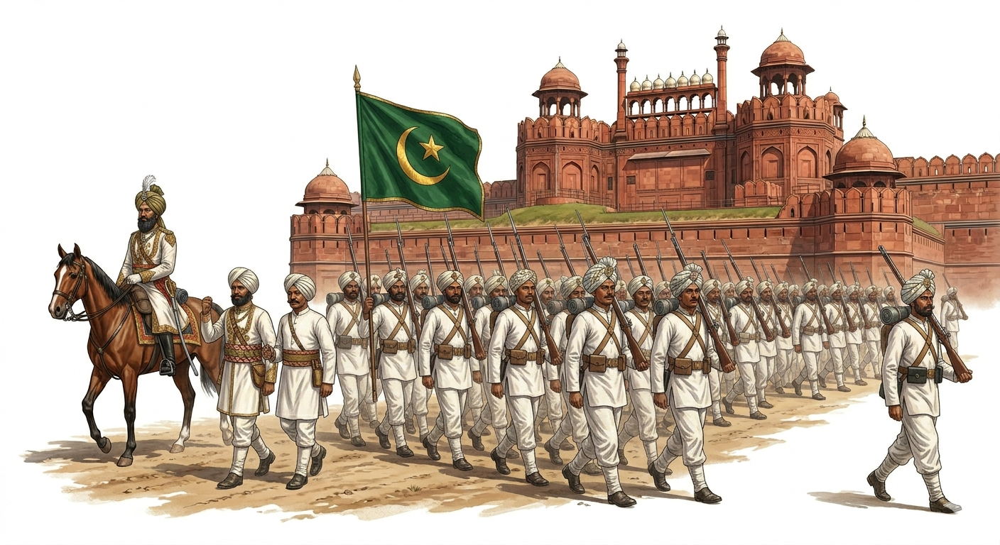
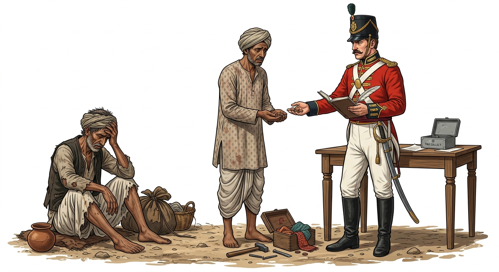
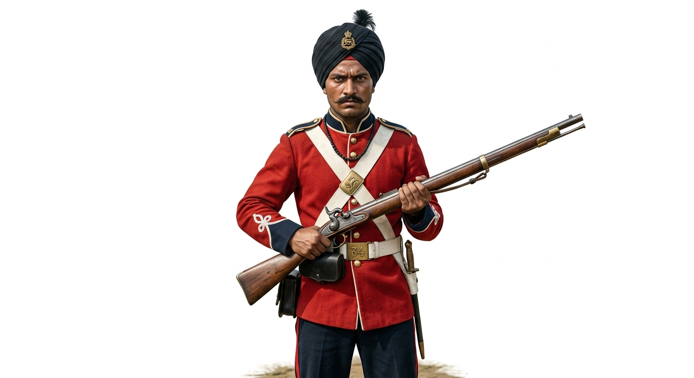
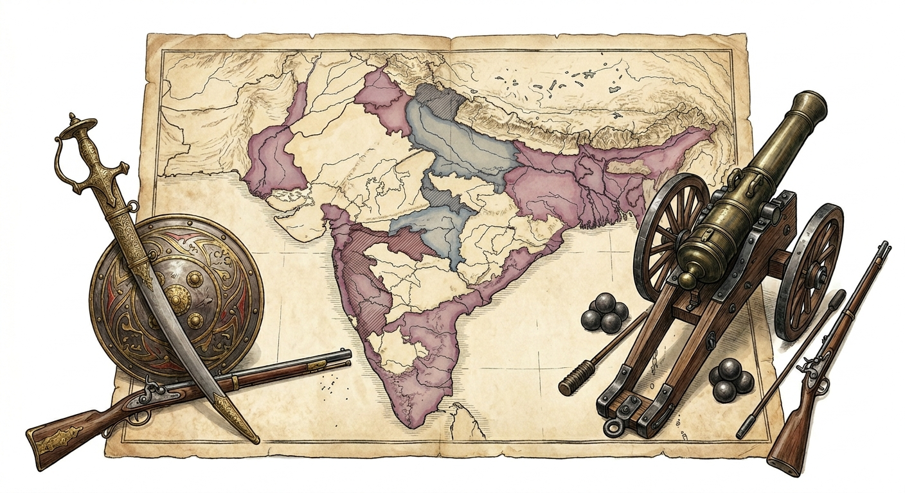

The Revolt of 1857 serves as a watershed moment and a landmark in the history of India's struggle for freedom. Before this, the British East India Company had spent nearly 100 years exploiting Indian resources and annexing territories.
Starting Date: The revolt officially started on May 10, 1857.
Starting Location: It began as a mutiny of soldiers in the Meerut Cantonment.
March to Delhi: On May 11, 1857, revolutionary sepoys crossed the River Yamuna, entered the Red Fort, and captured the city of Delhi.
ConceptNomenclature of the Revolt:
The British referred to this monumental event merely as the "Sepoy Mutiny" or "The Uprising", downplaying its significance. However, Indian historians proudly refer to it as the "First War of Independence" because, for the first time, different sections of society (peasants, artisans, soldiers, and kings) united as one nation to throw off foreign domination.

Figure 1: Indian sepoys marching towards the Red Fort in Delhi, 1857
2. Key Leaders of the Revolt
The revolt rapidly spread to various parts of the country. Many Indian rulers, who had personal scores to settle with the British due to their oppressive policies, stepped up to lead the rebellion in their respective territories.
Delhi:Bahadur Shah Zafar II. The aged Mughal Emperor was proclaimed the Shahenshah-e-Hindustan (Emperor of India) by the sepoys.
Kanpur:Nana Saheb, assisted by his brilliant military general Tantya Tope.
Awadh (Lucknow):Begum Hazrat Mahal. She took over the reign after Nawab Wajid Ali Shah was exiled.
Jhansi:Rani Lakshmi Bai, who fought valiantly for her lost kingdom.
Bihar (Jagdishpur):Kunwar Singh, an 80-year-old landlord who emerged as a remarkable military leader.
3. Major Causes of the Revolt
The uprising was not a sudden occurrence but the result of widespread resentment boiling against the British for a long time over several domains.
A. Political Causes
Doctrine of Lapse: Introduced by Lord Dalhousie, this policy created massive fear among Indian rulers. It stated that kingdoms without natural heirs would be annexed by the British after the king's demise (adoption of an heir was not allowed).
Broken Treaties & Disrespect: The British constantly violated treaties as per their convenience. For example, the Subsidiary Alliance of 1801 signed with Awadh forced Nawab Wajid Ali Shah to keep a permanent British army, pay for it, and station a British Resident at his court.
Annexation of Awadh: Despite Awadh being a loyal ally for a century, it was annexed under the false plea of "improper administration," deeply shocking other Indian rulers.
FactLord Dalhousie: Appointed as Governor-General of India in 1848, his eight years of rule are considered the greatest period for the aggressive expansion of British power in India, primarily through the ruthless Doctrine of Lapse.
B. Economic Causes
Destruction of Traditional Economy: The British destroyed the Indian economic structure. Industrial goods from Britain flooded Indian markets, completely ruining native artisans and local industries.
Peasant Exploitation: The zamindari system was highly exploitative. Peasants were tortured or jailed if they failed to pay heavy revenues in time and were forced to grow only cash crops required by British industries.
Unemployment: Whenever a princely state (like Awadh) was annexed, the Nawab's army was disbanded. In Awadh alone, about 60,000 professional soldiers lost their livelihoods.

Figure 2: Economic distress and heavy taxation imposed on Indian peasants
C. Social and Religious Causes
Interference in Customs: British social reforms were viewed as direct interference in Hindu customs and traditions.
Fear of Conversion: The introduction of Western education and Christian missionaries caused alarm. The Hindu law of property was deliberately changed to allow a Christian convert to receive a share of ancestral property.
Railways & Superstitions: The rapid spread of railways created fear among conservative Indians that they would lose their caste by sitting together. Rumours also spread panic, such as the myth that the British mixed bone dust into flour and sweets sold in markets.
Racial Discrimination: The British considered themselves a "superior race" and looked down upon Indians. Indians were not allowed to travel in first-class train compartments, and the judicial system was highly biased.
D. Military Causes
Humiliation & Low Pay: Despite helping establish the British empire in India, Indian sepoys were treated poorly. The highest pay for an Indian Subedar was less than the minimum pay of a new European recruit.
Overseas Deployment: The Act of 1856 made it compulsory for new Indian recruits to serve overseas. This deeply hurt Hindu sentiments, as crossing the sea (Kala Pani) was believed to cause the loss of caste and religion.
ImportantThe Immediate Cause (The Spark):
The introduction of the new Enfield Rifle was the breaking point. A rumour spread that the greased paper cartridge, which had to be bitten off before loading, was coated with beef and pig fat. This outraged both Hindu (cow is sacred) and Muslim (pig is detestable) sepoys.
On March 29, 1857, at Barrackpore, a young sepoy named Mangal Pandey refused to use the cartridge and shot down his British sergeant. He was arrested and executed, triggering the massive revolt.

Figure 3: Mangal Pandey, whose defiance at Barrackpore sparked the widespread revolt
4. Suppression of the Revolt
Although the revolt saw vast participation from peasants, artisans, and sepoys showcasing great Hindu-Muslim unity, the British eventually suppressed it with a heavy hand.
Recapture of Delhi: Delhi, the epicentre, was recaptured. The Kashmiri Gate was blown up, and hundreds were massacred.
Fate of the Mughals: Bahadur Shah Zafar II was tried for treason and exiled to Rangoon. His sons were cruelly shot down, ending the Mughal lineage.
Fall of Other Centres: Lucknow was recaptured in 1858. Rani Lakshmi Bai was martyred in battle, and Tantya Tope was captured and hanged.
5. Causes of the Failure of the Revolt
Despite the immense courage of the Indians, the First War of Independence failed to drive the British out due to several strategic and organizational reasons:
Premature Outbreak: The uprising was meticulously planned for months, but the anger over the cartridges caused it to break out before the appointed date, ruining the element of a simultaneous nationwide surprise attack.
Lack of Unity & Common Ideology: The concept of modern nationalism was missing. Different factions fought for different goals—sepoys wanted Mughal glory, Nana Saheb wanted Maratha power, and Rani Lakshmi Bai wanted her specific kingdom back.
Limited Geographical Spread: The revolt was confined mostly to North and Central India. The Sikhs in Punjab, the Nizams of Hyderabad, Scindias of Gwalior, Madras/Bombay regiments, Afghans, and Gurkhas remained loyal to the British and even helped suppress the mutiny.
Inferior Resources & Leadership: The rebels lacked modern, sophisticated weapons and an organized communication system compared to the highly disciplined British army. The central leadership failed to give unified direction to the uprising.

Figure 4: Technological disparity and limited geographical spread contributing to the failure
6. Results and Impacts of the Revolt
Although suppressed, the Revolt of 1857 fundamentally changed the way India was governed and sowed the seeds of modern Indian nationalism.
End of Company Rule: The rule of the East India Company officially ended. Through Queen Victoria's Proclamation of November 1, 1858, the British Crown took direct control of the administration of India. She assumed the title of Empress of India.
Administrative Changes: A Secretary of State was appointed by the British Parliament to look after Indian governance. The Governor-General was given a new title: Viceroy (The Representative of the British Crown).
Military Reorganization: The British reorganized the army drastically, increasing the ratio of British to Indian soldiers to prevent any future mutinies.
End of Annexations: The ruthless policy of conquest and the Doctrine of Lapse were abandoned. Indian princes were assured their states would not be annexed and were granted the right of adoption.
Religious Freedom: Full religious freedom was guaranteed to Indians, and assurances were given that high administrative posts would be awarded without discrimination.
ConceptLong-term Legacy:
By the end of 1859, British authority was fully re-established. However, the Revolt proved to be the ultimate source of inspiration for future generations. The heroic sacrifices of leaders like Rani Lakshmi Bai, Mangal Pandey, and Tantya Tope became household legends, fueling the later Indian freedom struggle that ultimately led to independence in 1947.